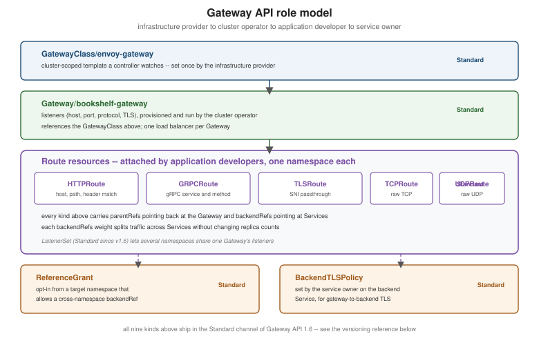

Gateway API
|
This content was generated with the assistance of AI and should be verified against the official documentation before being relied on in production. |
Ingress is frozen: it will never gain typed protocol routes, traffic splitting or a clean split between who runs the infrastructure and who owns the routes. Gateway API is the Kubernetes project’s successor for exposing traffic into (and, with GAMMA, inside) a cluster. This page is written against Kubernetes 1.37 and Gateway API 1.6 (1.6.2 at the time of writing; re-verify before relying on it). It builds on Services, which remain the backends every route points at, and it is the page the Deployment Strategies canary refers to.
The role model
Gateway API is a set of CRDs, not built-in resources, and it is deliberately split along who owns what:
-
Infrastructure provider — ships a controller and one or more
GatewayClassobjects. AGatewayClassis a cluster-scoped template that names the controller (spec.controllerName), much like a StorageClass or an IngressClass. -
Cluster operator — creates a
Gatewayfrom a class. AGatewaydeclares listeners (port, protocol, optional hostname, TLS configuration, and which namespaces may attach routes viaallowedRoutes) and usually results in one data-plane proxy and one load balancer. -
Application developer — writes route resources in the application’s own namespace. A route has
parentRefs(which Gateway, and optionally which listener, it attaches to), matching rules andbackendRefs(Services and their ports). -
Service owner — may attach policies to a backend Service, such as
BackendTLSPolicy.

Ingress squeezed all of this into one object plus controller-specific annotations; here each concern is its own typed resource with its own RBAC, which is the main reason a platform team can hand application teams "create routes in your namespace" without handing them the load balancer.
| Kind | Purpose | Channel in v1.6 |
|---|---|---|
|
Template and listeners; the entry point. |
Standard |
|
HTTP and terminated HTTPS: host, path, header, query and method matching, filters, weights. |
Standard |
|
Matches on gRPC service and method. |
Standard |
|
Routes TLS by SNI, typically without terminating it (passthrough). |
Standard |
|
Raw L4 streams. Graduated to |
Standard |
|
A target namespace’s explicit consent to a cross-namespace reference. |
Standard |
|
TLS from the Gateway to a backend Service. |
Standard |
|
Lets other namespaces contribute listeners to a shared Gateway. |
Standard |
Release channels
Every Gateway API release publishes two CRD bundles. The Standard channel contains only resources and fields that
are GA or Beta and carry compatibility guarantees; the Experimental channel adds alpha-stage resources and fields
that may change or disappear. The table above reflects the files in the config/crd/standard directory of the
v1.6.2 tag, which contains backendtlspolicies, gatewayclasses, gateways, grpcroutes, httproutes,
listenersets, referencegrants, tcproutes, tlsroutes and udproutes. Older material (including many blog posts)
lists TCPRoute, UDPRoute and TLSRoute as experimental; that was true before 1.5 and 1.6 and is outdated now.
Install one channel per cluster, and do not switch from Experimental back to Standard once experimental-only fields are
in use.
Source: Gateway API Docs — Versioning.
Installing the CRDs and Envoy Gateway on kind
Gateway API is useless without a controller. This section uses Envoy Gateway, the project’s simplest
implementation to run locally, on the bookshelf kind cluster from
Getting Started (the same kind-config.yaml, unchanged). Installing
the Envoy Gateway Helm chart also installs the Gateway API CRDs it needs; on a cluster whose provider already manages
the CRDs, use the provider-managed install steps in its documentation instead to avoid two owners.
helm install eg oci://docker.io/envoyproxy/gateway-helm \
--version v1.9.2 -n envoy-gateway-system --create-namespace
kubectl wait --timeout=5m -n envoy-gateway-system \
deployment/envoy-gateway --for=condition=Available
kubectl get crd | grep gateway.networking.k8s.iodeployment.apps/envoy-gateway condition met
gatewayclasses.gateway.networking.k8s.io 2026-09-30T10:12:04Z
gateways.gateway.networking.k8s.io 2026-09-30T10:12:04Z
httproutes.gateway.networking.k8s.io 2026-09-30T10:12:04Z
referencegrants.gateway.networking.k8s.io 2026-09-30T10:12:04Z
...Source: Envoy Gateway Docs — Quickstart.
A kind cluster has no cloud load balancer, so the Gateway will never receive an external address by itself. Either
install a bare-metal load balancer such as MetalLB, or reach the proxy with kubectl port-forward, as the quickstart
does. The alternatives are Istio (whose Gateway API support doubles as its ingress and, through GAMMA, mesh routing,
see Cluster Networking, CNI and Service Mesh) and NGINX
Gateway Fabric, the NGINX project’s replacement path for ingress-nginx. All conformant implementations accept the
same HTTPRoute manifests, so nothing below is Envoy-specific except the GatewayClass controller name.
The Gateway
apiVersion: gateway.networking.k8s.io/v1
kind: GatewayClass
metadata:
name: envoy-gateway
spec:
controllerName: gateway.envoyproxy.io/gatewayclass-controller
---
apiVersion: gateway.networking.k8s.io/v1
kind: Gateway
metadata:
name: bookshelf-gateway
namespace: bookshelf
spec:
gatewayClassName: envoy-gateway
listeners:
- name: http
protocol: HTTP
port: 80
allowedRoutes:
namespaces:
from: Samekubectl apply -f gateway.yaml
kubectl get gateway -n bookshelf
kubectl describe gateway bookshelf-gateway -n bookshelfNAME CLASS ADDRESS PROGRAMMED AGE
bookshelf-gateway envoy-gateway True 20sSource: Gateway API Docs — Getting started.
allowedRoutes.namespaces.from is Same (default), All or Selector; it is the Gateway’s half of the handshake
that decides which namespaces' routes may attach. PROGRAMMED: True means the controller has configured its
data plane; an empty ADDRESS on kind is expected without a load balancer.
Bookshelf routes
An HTTPRoute attaches to the Gateway with parentRefs and sends traffic to Services. The route below sends the API
paths to catalog-api and reviews-api, sends everything else to web, and adds a header match for an internal
cohort:
apiVersion: gateway.networking.k8s.io/v1
kind: HTTPRoute
metadata:
name: bookshelf
namespace: bookshelf
spec:
parentRefs:
- name: bookshelf-gateway
hostnames:
- bookshelf.example.com
rules:
- matches:
- path:
type: PathPrefix
value: /catalog
backendRefs:
- name: catalog-api
port: 80
- matches:
- path:
type: PathPrefix
value: /reviews
headers:
- name: x-bookshelf-cohort
value: internal
backendRefs:
- name: reviews-api
port: 80
- backendRefs:
- name: web
port: 80kubectl get httproute -n bookshelf
kubectl describe httproute bookshelf -n bookshelfSource: Gateway API Docs — HTTPRoute.
Matches inside one matches entry are ANDed; multiple entries in the list are ORed; a rule with no matches matches
everything. Across rules, the most specific match wins (exact path before prefix, longer prefix first, then header and
query counts), so rule order is not significant the way it is in some proxies. kubectl describe shows the
Accepted and ResolvedRefs conditions on each parent, which is the first place to look when a route does nothing.
Filters
Filters change a request or response on the way through a rule.
rules:
- matches:
- path: {type: PathPrefix, value: /old-catalog}
filters:
- type: RequestRedirect
requestRedirect:
path: {type: ReplacePrefixMatch, replacePrefixMatch: /catalog}
statusCode: 301
- matches:
- path: {type: PathPrefix, value: /api/catalog}
filters:
- type: URLRewrite
urlRewrite:
path: {type: ReplacePrefixMatch, replacePrefixMatch: /catalog}
- type: RequestHeaderModifier
requestHeaderModifier:
add:
- {name: x-forwarded-by, value: bookshelf-gateway}
- type: RequestMirror
requestMirror:
backendRef: {name: catalog-api-shadow, port: 80}
backendRefs:
- name: catalog-api
port: 80RequestRedirect answers the client directly. URLRewrite changes the path or host the backend sees.
RequestHeaderModifier (and the response equivalent) adds, sets or removes headers. RequestMirror copies traffic to
a shadow backend and discards its response, which lets a new catalog-api version be exercised with real requests
before it serves any.
Weighted canary
The canary from Deployment Strategies is one field:
backendRefs:
- name: catalog-api-stable
port: 80
weight: 90
- name: catalog-api-canary
port: 80
weight: 10TLS termination
The Gateway, not each route, owns the certificate. Add an HTTPS listener that references a TLS Secret in the same namespace (here a placeholder Secret that cert-manager, described in Ingress, would normally create and renew):
spec:
listeners:
- name: https
protocol: HTTPS
port: 443
hostname: bookshelf.example.com
tls:
mode: Terminate
certificateRefs:
- kind: Secret
name: bookshelf-tls
allowedRoutes:
namespaces:
from: SameSource: Gateway API Docs — TLS.
mode: Passthrough instead forwards the encrypted stream to a TLSRoute matched by SNI. To encrypt the last hop from
the Gateway to a backend, attach a BackendTLSPolicy to the Service with the CA to validate against.
Cross-namespace routing with ReferenceGrant
A route may only reference a Service in its own namespace unless the target namespace opts in. If the web route in
bookshelf should send /reviews to a Service in a shared-services namespace, that namespace publishes a grant:
apiVersion: gateway.networking.k8s.io/v1
kind: ReferenceGrant
metadata:
name: allow-bookshelf-routes
namespace: shared-services
spec:
from:
- group: gateway.networking.k8s.io
kind: HTTPRoute
namespace: bookshelf
to:
- group: ""
kind: ServiceSource: Gateway API Docs — ReferenceGrant.
Without the grant the route’s ResolvedRefs condition is False with reason RefNotPermitted. The same mechanism
lets a Gateway in one namespace use a certificate Secret from another. The design prevents the confused-deputy
problem that annotation-based Ingress cross-namespace tricks allowed.
GAMMA in brief
GAMMA (Gateway API for Mesh Management and Administration) reuses HTTPRoute for east-west traffic: a route whose
parentRefs point at a Service rather than a Gateway configures how a supporting mesh routes traffic to that
Service, so the weighted canary above can also apply to in-cluster callers. It is the Gateway API route into the
service-mesh material in Cluster Networking, CNI and
Service Mesh, and support depends on the mesh.
Source: Gateway API Docs — Service Mesh.
Ingress to Gateway mapping
| Ingress | Gateway API |
|---|---|
|
|
The controller Deployment and its Service |
A |
|
A listener’s |
|
|
|
|
|
|
Annotations for rewrite, redirect, mirror, weight |
Typed |
|
A rule with no |
Nothing (annotations only) |
Cross-namespace |
The ingress2gateway tool described in Ingress automates most of this
translation. For where a gateway sits in a wider architecture, see
API Gateway and BFF; for the managed
Gateway API offering on Azure, see AKS Clusters and
AKS Microservices.
Where the books are outdated
Both O’Reilly books predate Gateway API entirely. They expose applications with a LoadBalancer Service or an
externally run proxy. Those patterns still work, but the newer Ingress API is now frozen, so new external-traffic
designs should start from Gateway API.
The Bookshelf request path
(bookshelf-gateway)"] Proxy -->|"/catalog, 90%"| CatS["Service catalog-api-stable"] Proxy -->|"/catalog, 10%"| CatC["Service catalog-api-canary"] Proxy -->|"/reviews + header"| Rev["Service reviews-api"] Proxy -->|"everything else"| Web["Service web"] CatS --> P1[("catalog-api Pods")] CatC --> P2[("canary Pods")] Ctl["Envoy Gateway controller"] -.->|"watches Gateway and HTTPRoute"| Proxy